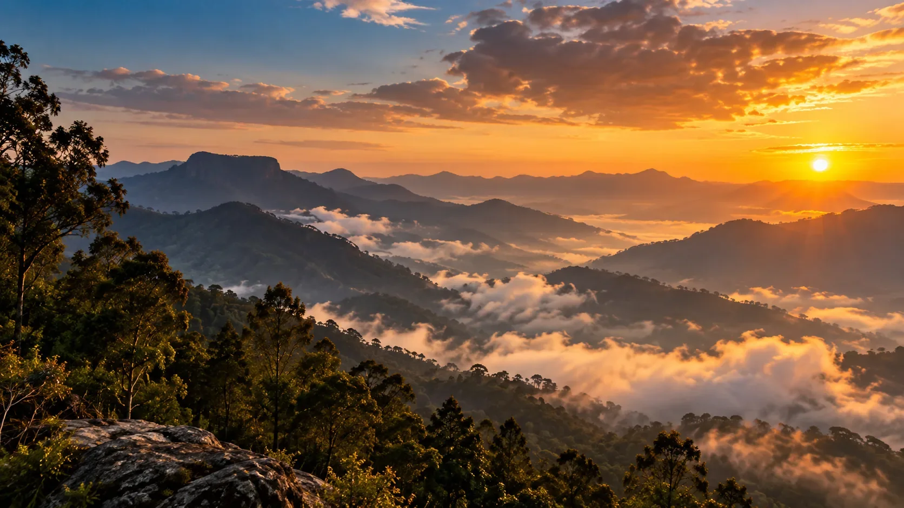

Kodaikanal · Valley Tour
Kodaikanal Valley Tour
Terraced slopes, cliffside viewpoints and a waterfall stop around Vattakanal — a private cab route built for couples, families and small groups.
Pick the loop length that fits your schedule
One dedicated vehicle for the whole valley loop
Vattakanal, Dolphin's Nose, Echo Point & the falls
Personalised pricing back within hours
The Tour
Everything You Need for the Valley Loop
This tour bundles the practical parts of a valley-side sightseeing day into one booking, timed against road conditions and viewpoint hours.
Private Transportation
A dedicated cab for the full Vattakanal loop — no sharing with strangers.
Local Driver-Guide
Someone who knows the route, the stop order and the best light for photos.
Four Viewpoint Stops
Vattakanal, Dolphin's Nose, Echo Point and Silver Cascade Falls.
Flexible Timing
Half-day or full-day loop, paced to your group's pickup time.
Parking & Tolls
Applicable parking, toll and driver charges included as per tour terms.
Local Coordination
One point of contact for the route and pickup — not a shared shuttle.
The Route
Valley Tour Route
A single loop through Vattakanal's terraced slopes and the cliffside viewpoints above it, with a waterfall stop on the way back.
Valley Loop · Vattakanal & Viewpoints
4 StopsPickup
Our driver picks you up from your hotel, bus stand or railway station and heads toward Vattakanal.
Vattakanal
Terraced slopes and forest views over the valley — the anchor stop of the whole route.
Dolphin's Nose
A narrow rock outcrop with a sheer drop and an open view across the valley floor.
Echo Point (Green Valley View)
A wide cliffside lookout, one of the more photographed points on the loop.
Silver Cascade Falls
A roadside waterfall stop on the way back toward town — the full-day route adds extra time here.
Drop-off
Return to your pickup point, or continue on to your next stop on the full-day route.
The exact route and stop order are confirmed against travel time, weather and viewpoint conditions on the day.
Destinations
Viewpoints Covered on This Tour
Vattakanal's terraced slopes anchor the loop, with three cliffside and waterfall stops built around it.
Vattakanal — terraced slopes and forest views, the anchor stop of the route.
 Dolphin's Nose
Dolphin's Nose

Echo Point (Green Valley View) Silver Cascade Falls
Silver Cascade Falls
 Optional add-on: Coaker's Walk
Optional add-on: Coaker's Walk
Tour Package Rates
Kodaikanal Valley Tour Rates
Per-vehicle rates for the valley loop — final pricing is confirmed against travel dates, season and availability.
Rates are per vehicle for the valley loop, covering driver and fuel for the route. Confirm exact inclusions and current availability on WhatsApp.
Good to Know
What's Not Included
Exact inclusions and exclusions may vary by selected tour option.
Booking
How Booking Works
Four simple steps, and none of them involve waiting days for a callback.
Choose Half or Full Day
Pick the loop length that fits your schedule.
Share Your Details
Travel date, number of guests and pickup location.
Confirm the Cab
We check availability and confirm pricing.
Enjoy the Valley Loop
Pickup, four viewpoints and a comfortable drop-off.
Questions
Frequently Asked Questions
Route
Vattakanal, Dolphin's Nose, Echo Point and Silver Cascade Falls, in one private-cab loop.
Yes, it can be added as an optional stop on the full-day loop — mention it when booking.
Logistics
Yes, the tour is built around private cab travel. Confirm vehicle type and capacity while booking.
Entrance tickets are generally excluded unless specifically stated in the confirmed tour.
Booking
We check real availability and usually send pricing within a few hours of your enquiry.
Yes — see the full range of featured tours and ready-made packages on the Travels in Kodaikanal hub page.
Plan Your Kodaikanal Valley Tour
Terraced slopes, cliffside viewpoints and a waterfall stop — one private cab, one simple booking.